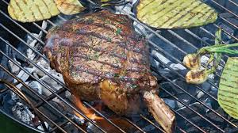

Carne asada
Carne asada

¿Cómo hacer una buena carne asada?
- Enciende la parrilla. Para asar filetes de carne como debe ser, necesitas que tu parrilla esté a la temperatura más alta posible.
...
- Prepara la carne. ...
- Sella y voltea los filetes
- Muévelos al lado menos caliente. ...
- Verifica si la carne está lista. ...
- Retira de la parrilla y deja reposar.
Atras Cómo hacer Menudo Como hacer pozoleCómo hacer tortillas de Harina